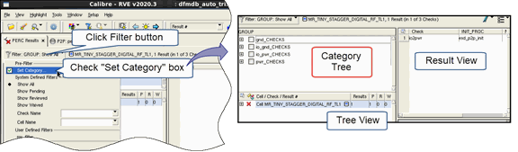
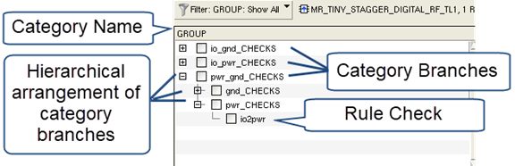
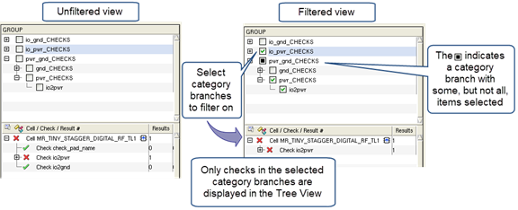

You
can filter PERC results by user-defined categories. Filtering by
categories makes it easier to select only the checks you are interested
in debugging—only checks in the selected categories are displayed
in the tree view of the Calibre RVE. A category is a grouping of
rule checks and is defined in the Check Text Override (CTO) file.
Procedure
- Open your results in Calibre RVE for PERC.
- If the CTO file is not loaded automatically,
select and specify the CTO file.
- Click the
Filter button and check “Set Category” to display the category tree.

The Category Tree is displayed above the Tree
View. A category consists of one or more category branches. A category
branch contains rule checks or other category branches. The leaves
in the category tree are rule checks.

- Click in
the checkbox next to a category branch to select it, or use the
right-click menu. Only the rule checks belonging to the selected
category branches are displayed in the Tree View. You can also select
individual rule checks.
The image on the right shows filtering
by GROUP category, with the io_pwr_CHECK category branch selected.
Only the rule checks under that category are displayed in the Tree
View after filtering.

Results
The Tree View is filtered by the selections in the category tree,
making it easier to find and focus on the results of interest. Use
the Tree View and Result View to select, view, and highlight results
as usual.
Note: The Category Tree is only used for filtering—it is not
used for selecting checks to highlight or selecting checks to display
in the Result View.